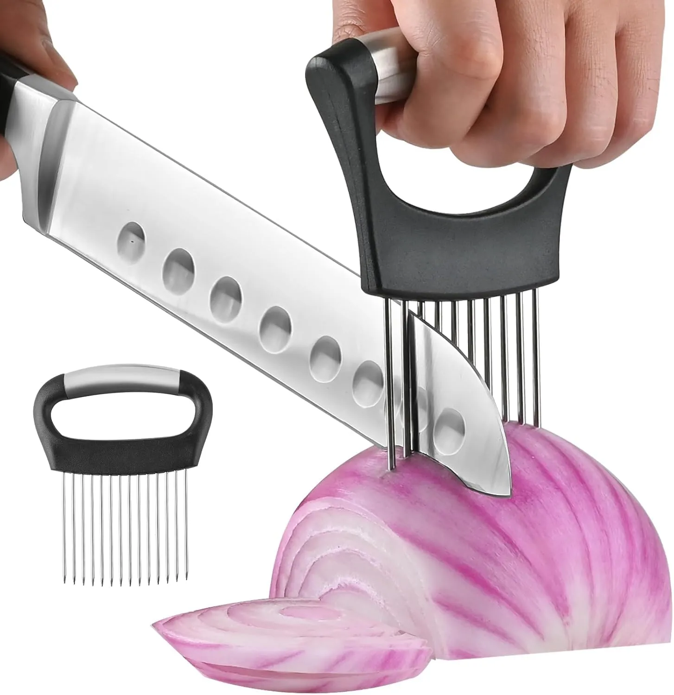
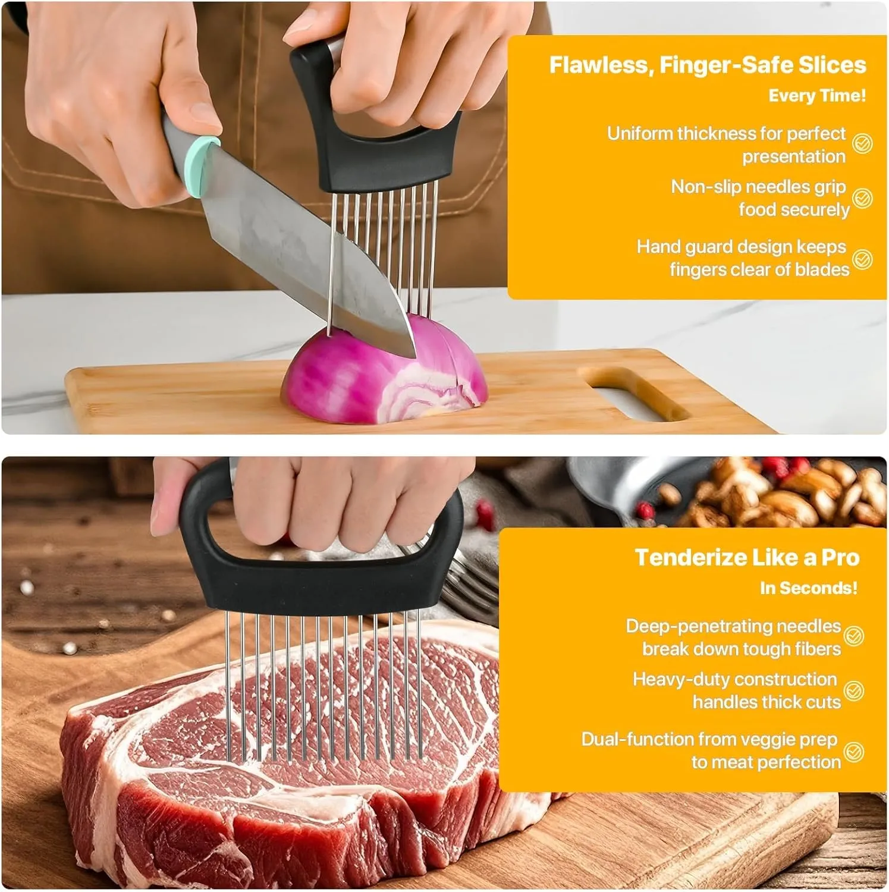
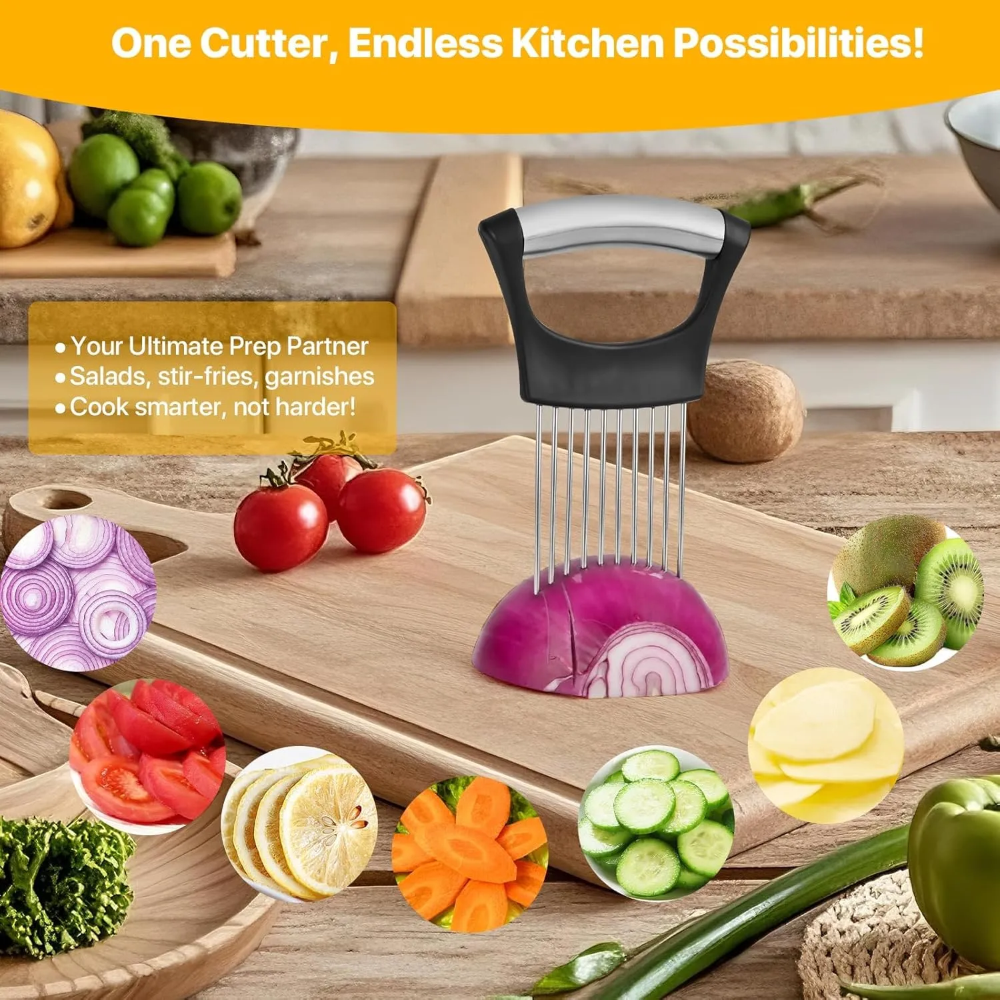
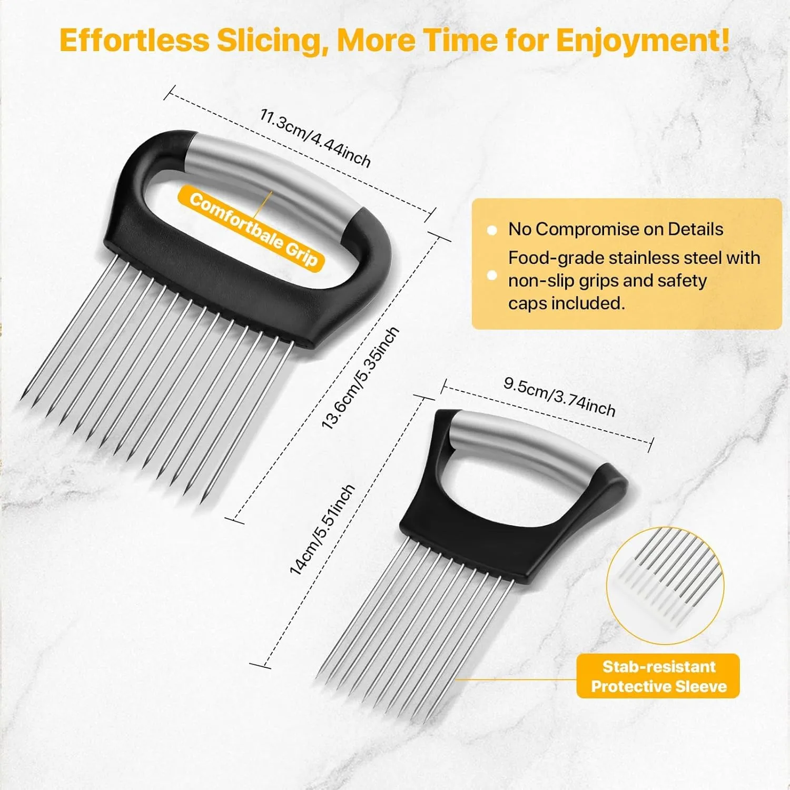
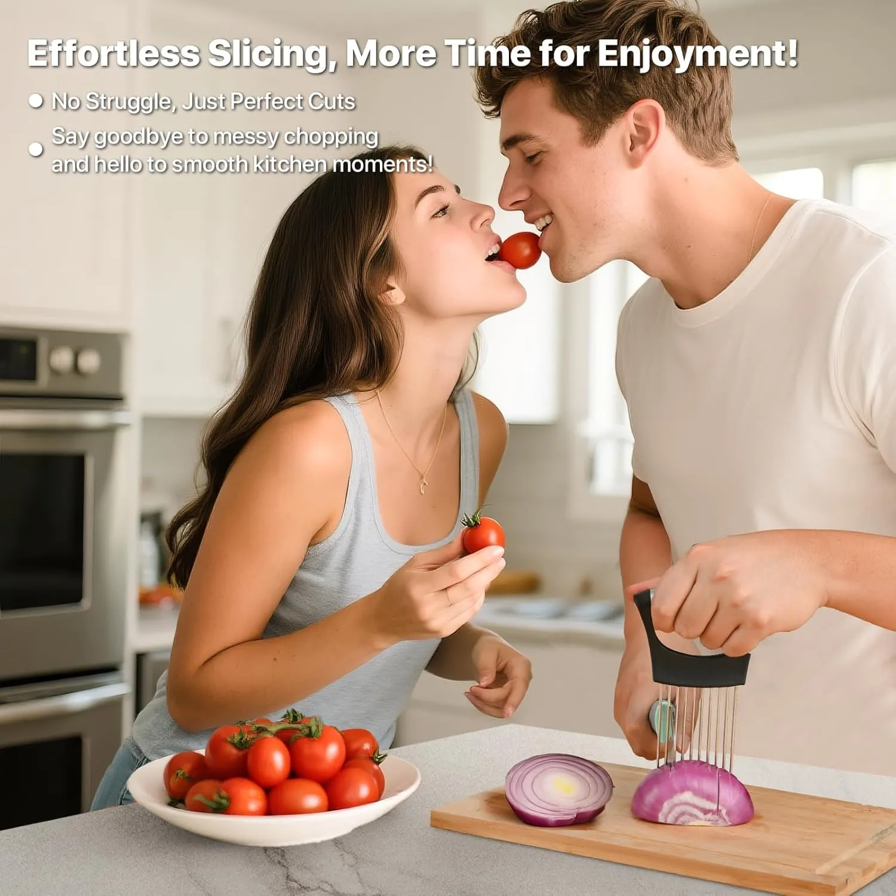

Better grip while cutting
The stainless steel prongs hold food in place so your other hand does not have to sit as close to the blade.
This 2-piece stainless steel onion holder is a simple kitchen assistant made to grip rounded foods, guide neater slices, and keep your fingers farther from the knife while you prep.

The best kitchen gadgets are easy to understand in one image. This one solves a familiar prep problem: rounded foods move, fingers get too close, and slices come out uneven.
The stainless steel prongs hold food in place so your other hand does not have to sit as close to the blade.
The spacing between the prongs acts like a simple slicing guide for onions, tomatoes, lemons, potatoes, and similar foods.
The pointed prongs can also help tenderize meat, giving the tool more use than a single-purpose slicer.
Use the page images to show the product in action, the two included sizes, and the everyday foods it can help slice.

One simple hand tool for vegetable prep and basic meat tenderizing tasks.

Good for onions, tomatoes, cucumbers, carrots, potatoes, lemons, kiwi, and more.

A larger and smaller holder support different slicing jobs and ingredient sizes.

This is not a complicated appliance. It is a small, low-friction kitchen helper that makes the problem visible: slippery foods are annoying to cut, and a holder gives your hand a safer position.
The handle gives your gripping hand a more comfortable position away from the slicing path.
The prongs pierce and hold foods so the knife can pass between them with better guidance.
No cords, no counter space, and no bulky setup. Just rinse, dry, and store after use.
It is especially useful for foods that roll, slip, or need a steadier hand while slicing.
Helps hold curved onion halves while guiding cleaner cuts.
Useful for slicing citrus into neater rounds or wedges.
Helps stabilize softer round foods while slicing carefully.
Works for everyday prep jobs where a simple guide helps.
If onions, tomatoes, lemons, or potatoes keep moving under your knife, this 2-piece holder gives you a simple way to grip, guide, and prep with more confidence.
View on Amazon